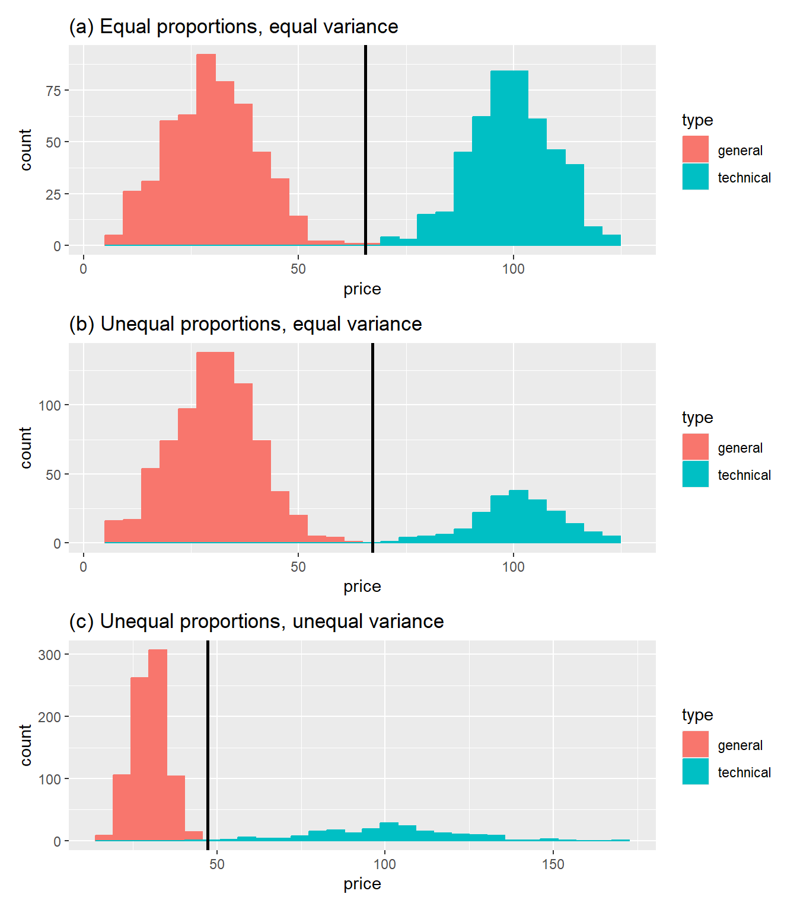
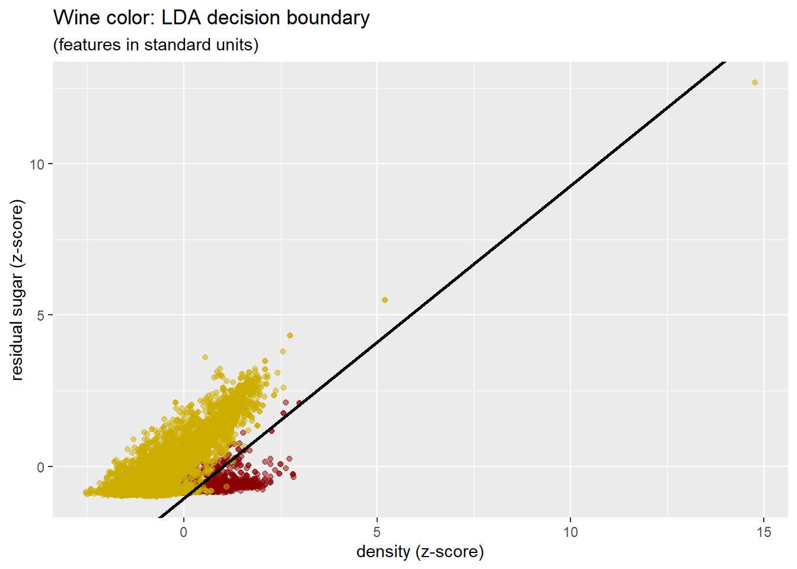
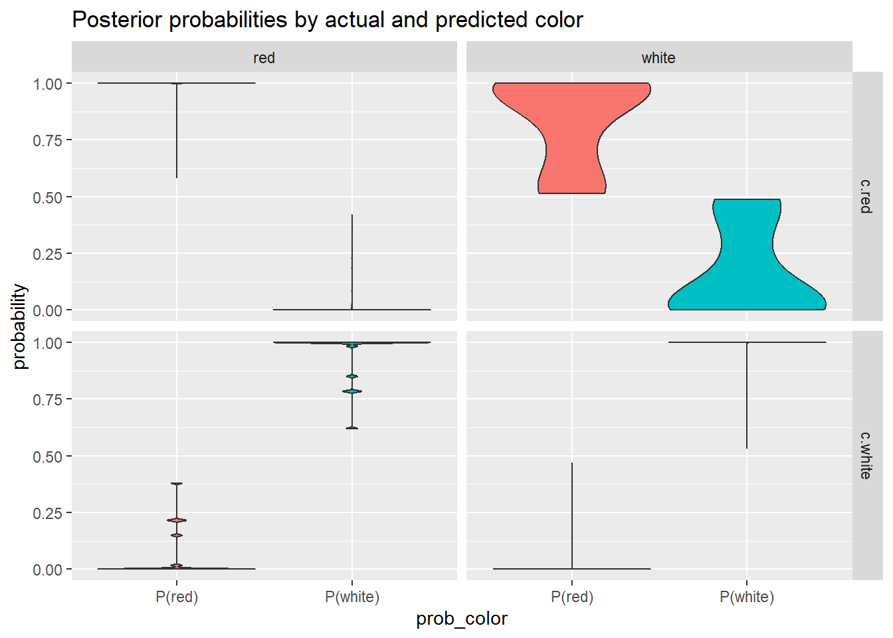
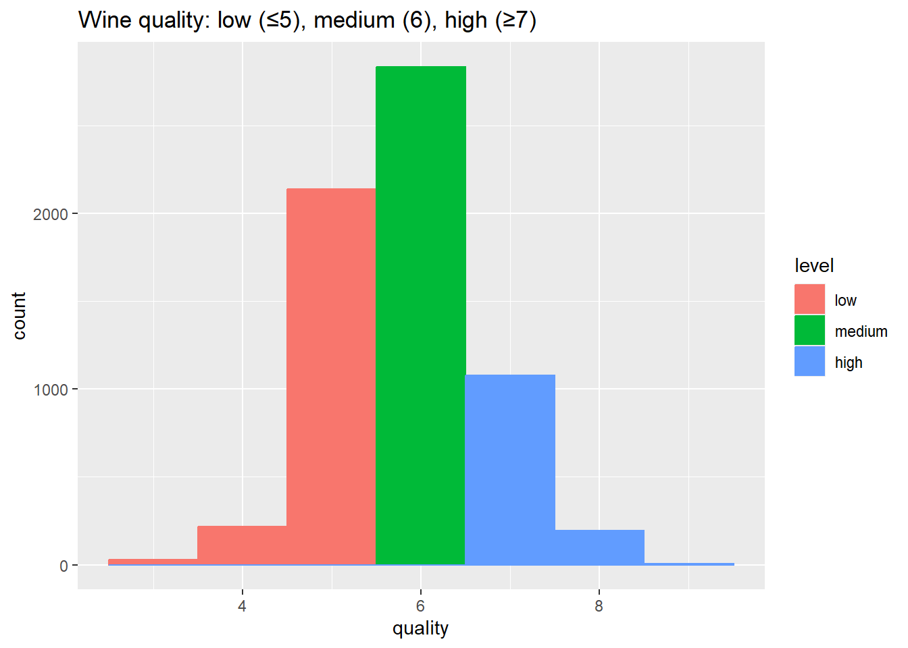
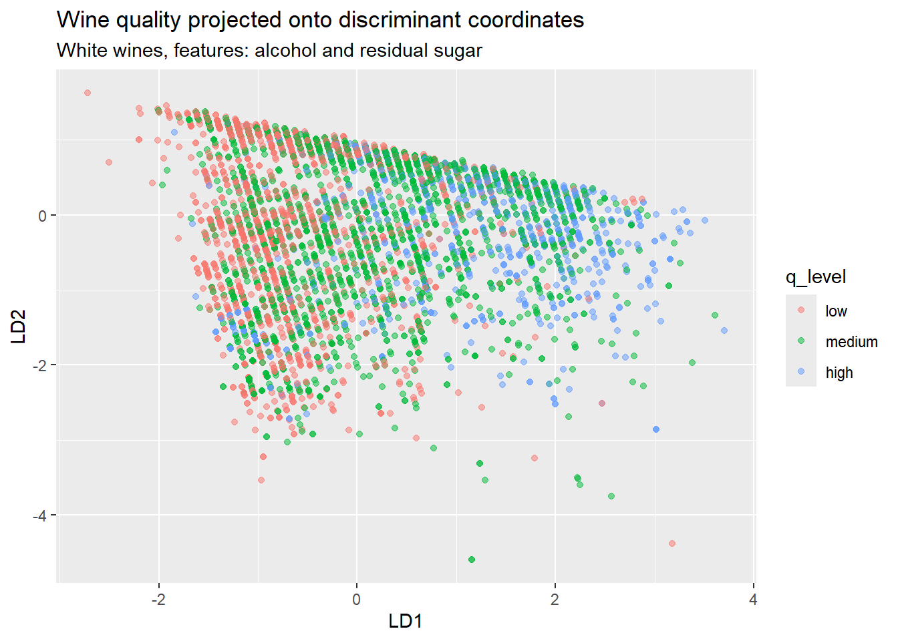

9 Linear Discriminant Analysis
9.1 Introduction
In Chapter 8 we developed Principal Component Analysis as a method for finding directions of maximum variance in high-dimensional data. PCA is unsupervised: it seeks structure in the feature matrix without reference to any response variable. The directions of maximum variance may or may not be useful for distinguishing among groups of observations.
This chapter develops Linear Discriminant Analysis (LDA), the supervised counterpart to PCA. Where PCA asks “along which directions do the features vary most?”, LDA asks “along which directions are the classes best separated?” When class labels are available, LDA exploits them to find projections optimized for classification rather than variance.
A Note on Acronyms
The abbreviation “LDA” appears twice in this book with different meanings. In this chapter LDA denotes Linear Discriminant Analysis—a supervised method for classification and dimension reduction. In Part III (Text Data), we will encounter Latent Dirichlet Allocation—a topic model for discovering thematic structure in document collections. The name collision is unfortunate but standard in the literature. Context should make clear which method is intended.
LDA connects to several themes developed throughout this book:
Geometry: Like PCA, LDA finds optimal linear subspaces via orthogonal projection. The difference lies in what “optimal” means: PCA maximises variance; LDA maximises class separation.
Closed-form solution: LDA, like PCA, admits an exact analytical solution via eigenvalue decomposition. We do not iterate toward an optimum; we solve directly for the discriminant directions. This places both methods in the classical tradition, even as they address modern high-dimensional challenges.
Supervised versus unsupervised: The distinction between LDA (supervised) and PCA (unsupervised) exemplifies a fundamental choice in statistical learning: whether or not to guide analysis toward a specific prediction task.
Connection to linear regression: In Chapter 7 we projected a response vector onto the column space of a design matrix. LDA involves a related but distinct projection: we project observations onto directions that separate class means while minimising within-class spread.
We begin with a simple one-dimensional example in order to introduce the key ideas, develop the mathematical framework for multiple features and classes, examine Fisher’s geometric perspective, and then apply LDA to the wine quality data introduced in Chapter 8.
9.2 Motivating Example: Book Prices
Consider a simple classification problem. A bookstore stocks two types of books: general books (fiction, business, self-help) and technical books (programming, mathematics, science). Technical books tend to be more expensive. Given only the price of a book, can we classify it as general or technical?
This toy example illustrates the essential structure of discriminant analysis. We have one predictor (price), two classes (general, technical), and we seek a decision rule that minimises classification error.
Figure 9.1 shows three scenarios that differ in class proportions and price variability:
In scenario (a), technical and general books have equal proportions and equal price variability. The optimal decision boundary (vertical line) lies midway between the class means.
In scenario (b), the store stocks fewer technical books (20%) than general books (80%). Even though the price distributions have the same shape, the decision boundary shifts rightward: we require stronger evidence (a higher price) before classifying a book as technical, because technical books are less common a priori.
In scenario (c), technical books have not only lower proportion but also higher price variability. The wider spread of technical book prices increases the risk of misclassifying an expensive general book as technical. The optimal boundary accounts for this asymmetry.
The first two scenarios admit linear decision rules, the domain of Linear Discriminant Analysis. The third scenario, with unequal variances, calls for Quadratic Discriminant Analysis (QDA), which we introduce later.
9.3 The Binary Classification Problem
We now formalize the classification problem for two classes. Let \(Y \in \{\mathcal{C}_1, \mathcal{C}_2\}\) denote the class label (general or technical), and let \(x\) denote the observed feature (price).
9.3.1 Loss and Risk
A decision rule \(\mathcal{D}(x)\) maps an observed feature value to a predicted class. Classification errors incur costs: let \(c_{j,k} \ge 0\) denote the cost of predicting class \(\mathcal{C}_j\) when the true class is \(\mathcal{C}_k\). Correct classifications incur no cost: \(c_{1,1} = c_{2,2} = 0\).
The risk of decision rule \(\mathcal{D}\) is its expected misclassification cost:
\[ \begin{align} \rho(\mathcal{D}) &= c_{2,1} \, \pi_1 \, P(\mathcal{D}(x) = 2 \mid Y = \mathcal{C}_1) \\ & \quad + \; c_{1,2} \, \pi_2 \, P(\mathcal{D}(x) = 1 \mid Y = \mathcal{C}_2) \end{align} \qquad(9.1)\]
where \(\pi_k = P(Y = \mathcal{C}_k)\) is the prior probability of class \(k\).
9.3.2 The Bayes Decision Rule
Let \(f_k(x)\) denote the probability density of \(x\) given class \(\mathcal{C}_k\). The rule that minimises risk assigns observation \(x\) to the class with higher weighted density:
\[ \begin{align} \mathcal{D}(x) &= \begin{cases} \mathcal{C}_1 & \text{if } c_{2,1} \, \pi_1 \, f_1(x) > c_{1,2} \, \pi_2 \, f_2(x) \\ \mathcal{C}_2 & \text{otherwise} \end{cases} \end{align} \qquad(9.2)\]
Equivalently, we can express this in terms of the likelihood ratio:
\[ \begin{align} \mathcal{D}(x) &= \begin{cases} \mathcal{C}_1 & \text{if } \dfrac{f_1(x)}{f_2(x)} > \dfrac{c_{1,2} \, \pi_2}{c_{2,1} \, \pi_1} \\ \mathcal{C}_2 & \text{otherwise} \end{cases} \end{align} \qquad(9.3)\]
This is the Bayes decision rule. When misclassification costs are symmetric (\(c_{1,2} = c_{2,1}\)) and classes are equally prevalent (\(\pi_1 = \pi_2\)), the threshold simplifies to: classify according to whichever density is larger.
9.3.3 Gaussian Assumption and Linear Boundaries
Suppose the feature \(x\) follows a normal distribution within each class:
\[ f_k(x) = \frac{1}{\sqrt{2\pi}\,\sigma_k} \exp\left( -\frac{(x - \mu_k)^2}{2\sigma_k^2} \right) \qquad(9.4)\]
Taking logarithms of the Bayes rule yields a decision based on the log-likelihood ratio, which expands to a quadratic function of \(x\).
When variances are equal (\(\sigma_1 = \sigma_2 = \sigma\)), the quadratic terms cancel, leaving a linear function of \(x\):
\[ \log\frac{f_1(x)}{f_2(x)} = \frac{\mu_1 - \mu_2}{\sigma^2} x - \frac{\mu_1^2 - \mu_2^2}{2\sigma^2} \qquad(9.5)\]
The decision boundary occurs where this expression equals the log of the cost-prior ratio. Solving for \(x\) yields a single threshold and a linear decision rule.
When variances differ, the quadratic terms remain, and the decision boundary may consist of two points. This scenario is addressed by Quadratic Discriminant Analysis (QDA), which relaxes the equal-variance assumption.
The key insight for LDA: equal within-class variances yield linear decision boundaries.
9.4 Multiple Features and Classes
9.4.1 Model Assumptions
We now extend to \(d\) features and \(K\) classes. Each observation \(x_{i, \bullet} \in \mathbb{R}^d\) belongs to one of \(K\) categories \((\mathcal{C}_1, \ldots, \mathcal{C}_K)\) identified by label \(Y\).
Let \(\pi_k = P(Y = \mathcal{C}_k)\) denote the prior probability of class \(k\), estimated by:
\[ \hat{\pi}_k = \frac{n_k}{n} \qquad(9.6)\]
where \(n_k\) is the number of observations in class \(k\).
The LDA model assumes that within each class, features follow a multivariate normal distribution with class-specific mean \(\mu_{\bullet, k}\) but common covariance matrix \(Cov_{\bullet, \bullet}\):
\[ f_k(x_\bullet) = \frac{1}{(2\pi)^{d/2} |Cov_{\bullet, \bullet}|^{1/2}} \exp\left( -\frac{1}{2} (x_\bullet - \mu_{\bullet, k})^\top Cov_{\bullet, \bullet}^{-1} (x_\bullet - \mu_{\bullet, k}) \right) \qquad(9.7)\]
The common covariance assumption is what makes LDA linear.
9.4.2 Discriminant Functions
Applying the Bayes rule and simplifying (the quadratic terms cancel due to common covariance), we obtain the linear discriminant function for class \(k\):
\[ \delta_k(x_\bullet) = x_\bullet^\top \, Cov_{\bullet, \bullet}^{-1} \, \mu_{\bullet, k} - \frac{1}{2} \mu_{\bullet, k}^\top \, Cov_{\bullet, \bullet}^{-1} \, \mu_{\bullet, k} + \log(\pi_k) \qquad(9.8)\]
To simplify notation we now assume that the cost of mis-classification is the same for all pairs of classes. Then the Bayes classification rule assigns \(x_\bullet\) to the class with the largest discriminant value:
\[ \hat{Y}(x_\bullet) = \mathcal{C}_\eta \quad \text{if } \delta_\eta(x_\bullet) = \max_{k} \delta_k(x_\bullet) \qquad(9.9)\]
In practice, we replace unknown parameters with estimates:
\[ \hat{\delta}_k(x_\bullet) = x_\bullet^\top \, \hat{Cov}_{\bullet, \bullet}^{-1} \, \hat{\mu}_{\bullet, k} - \frac{1}{2} \hat{\mu}_{\bullet, k}^\top \, \hat{Cov}_{\bullet, \bullet}^{-1} \, \hat{\mu}_{\bullet, k} + \log(\hat{\pi}_k) \qquad(9.10)\]
9.4.3 Decision Boundaries
The boundary between classes \(\mathcal{C}_j\) and \(\mathcal{C}_k\) is the set of points where \(\delta_j(x_\bullet) = \delta_k(x_\bullet)\). Because the discriminant functions are linear (affine) in \(x_\bullet\), these boundaries are hyperplanes in \(\mathbb{R}^d\).
For \(K\) classes, there are \(\binom{K}{2}\) pairwise boundaries. In two dimensions, these are lines; in three dimensions, planes. The boundaries partition feature space into \(K\) decision regions.
9.5 Fisher’s Discriminant Criterion
The Bayesian derivation of LDA assumes Gaussian distributions with common covariance. R.A. Fisher (1936) arrived at the same discriminant directions from a purely geometric perspective—one that makes no distributional assumptions. Fisher’s approach provides valuable insight into what LDA accomplishes.
9.5.1 The Central Question
Given \(K\) classes in \(d\)-dimensional feature space, Fisher asked: what linear combination \(z = a_\bullet^\top x_\bullet\) best separates the classes?
The scalar \(z\) is a one-dimensional projection of observation \(x_\bullet\) onto direction \(a_\bullet\). “Best separation” means that projected class means should be spread apart while projected observations within each class remain tightly clustered.
9.5.2 Within-Class and Between-Class Covariance
To formalize this, we define two covariance matrices.
The within-class covariance matrix \(W_{\bullet, \bullet}\) measures spread of observations about their respective class means:
\[ W_{\bullet, \bullet} = \frac{1}{n - K} \sum_{k=1}^K \sum_{x_{i,\bullet} \in \mathcal{C}_k} (x_{i,\bullet} - \mu_{\bullet, k})(x_{i,\bullet} - \mu_{\bullet, k})^\top \qquad(9.11)\]
This is the pooled within-class sample covariance—the same as the common covariance matrix in the Gaussian formulation.
The between-class covariance matrix \(B_{\bullet, \bullet}\) measures spread of class means about the overall mean \(\mu_\bullet = \sum_k \pi_k \mu_{\bullet, k}\):
\[ B_{\bullet, \bullet} = \sum_{k=1}^K \pi_k (\mu_{\bullet, k} - \mu_\bullet)(\mu_{\bullet, k} - \mu_\bullet)^\top \qquad(9.12)\]
These matrices satisfy the identity \(T_{\bullet, \bullet} = W_{\bullet, \bullet} + B_{\bullet, \bullet}\), where \(T_{\bullet, \bullet}\) is the total covariance computed by ignoring class labels.
9.5.3 Fisher’s Criterion
When we project onto direction \(a_\bullet\), the projected data have:
- Between-class variance: \(a_\bullet^\top B_{\bullet, \bullet} \, a_\bullet\)
- Within-class variance: \(a_\bullet^\top W_{\bullet, \bullet} \, a_\bullet\)
Fisher’s criterion seeks the direction that maximises the ratio:
\[ \max_{a_\bullet} \; \frac{a_\bullet^\top B_{\bullet, \bullet} \, a_\bullet}{a_\bullet^\top W_{\bullet, \bullet} \, a_\bullet} \qquad(9.13)\]
This Rayleigh quotient is scale-invariant: multiplying \(a_\bullet\) by any nonzero constant leaves the ratio unchanged.
9.5.4 The Eigenvalue Problem
Maximising the Rayleigh quotient is equivalent to solving the generalised eigenvalue problem:
\[ B_{\bullet, \bullet} \, a_\bullet = \lambda \, W_{\bullet, \bullet} \, a_\bullet \qquad(9.14)\]
When \(W_{\bullet, \bullet}\) is invertible, this reduces to the standard eigenvalue problem:
\[ W_{\bullet, \bullet}^{-1} B_{\bullet, \bullet} \, a_\bullet = \lambda \, a_\bullet \qquad(9.15)\]
The eigenvector corresponding to the largest eigenvalue is the direction that best separates the classes according to Fisher’s criterion.
9.5.5 Rank Constraint and Multiple Directions
The matrix \(W_{\bullet, \bullet}^{-1} B_{\bullet, \bullet}\) is \(d \times d\), but its rank is at most \(\min(d, K-1)\). This is because \(B_{\bullet, \bullet}\) has rank at most \(K - 1\): the \(K\) class means lie in an affine subspace of dimension at most \(K - 1\) (they are constrained by their weighted average).
Consequently, there are at most \(\min(d, K-1)\) discriminant directions with nonzero eigenvalues. For binary classification (\(K = 2\)), there is exactly one discriminant direction. For three classes, at most two. This is a powerful dimension reduction: regardless of \(d\), we need at most \(K - 1\) dimensions to capture all information relevant to LDA classification.
The successive eigenvectors \((a_{\bullet, 1}, a_{\bullet, 2}, \ldots)\) are called Fisher’s discriminant coordinates, canonical variates, or linear discriminants. They are labeled LD1, LD2, etc., in the output of MASS::lda().
9.5.6 Connection to the Gaussian Derivation
Although Fisher’s derivation makes no distributional assumptions, the resulting directions coincide exactly with those from the Gaussian/Bayesian approach when class covariances are equal.
This equivalence is both theoretically satisfying and practically useful. The Gaussian framework provides posterior probabilities and a principled classification rule. Fisher’s perspective offers distribution-free geometric intuition about what the discriminant directions accomplish.
9.5.7 Connection to PCA
In the “sphered” space—where we transform \(\tilde{x}_\bullet = Cov_{\bullet, \bullet}^{-1/2} x_\bullet\) so that the within-class covariance becomes the identity—Fisher’s criterion reduces to maximising variance of the transformed class means. This is equivalent to PCA of the transformed class means.
Thus LDA can be interpreted as a two-step process: (1) “sphere” the data to equalize within-class spread, then (2) find the principal directions of the class centroids. PCA ignores class structure and finds directions of overall variance; LDA accounts for class structure by first removing within-class variation.
9.6 Computation in R
9.6.1 Using MASS::lda()
The classic R implementation is MASS::lda():
Show the code
library(MASS)
# Fit LDA model
lda_fit <- lda(class ~ feature1 + feature2, data = training_data)
# Examine scaling matrix (discriminant directions)
lda_fit$scaling
# Predict class labels
predict(lda_fit, newdata = test_data)$class
# Get posterior probabilities
predict(lda_fit, newdata = test_data)$posteriorThe scaling matrix contains the discriminant directions: columns LD1, LD2, etc. For \(K\) classes, there are at most \(K - 1\) columns.
9.6.2 Using tidymodels
The tidymodels framework provides a consistent interface via discrim_linear():
Show the code
library(tidymodels)
library(discrim)
# Specify model
lda_spec <- discrim_linear()
# Fit model
lda_fit <- lda_spec |>
fit(class ~ ., data = training_data)
# Or using fit_xy()
lda_fit <- lda_spec |>
fit_xy(x = training_features, y = training_labels)
# Predict classes
predict(lda_fit, new_data = test_data, type = "class")
# Predict probabilities
predict(lda_fit, new_data = test_data, type = "prob")The underlying engine is still MASS::lda(), but the interface integrates smoothly with other tidymodels components.
9.7 Example: Wine Color Classification
In Section 8.8 we discovered through unsupervised PCA that the first principal component of the wine quality data separates red and white wines almost perfectly. This discovery emerged from the correlation structure alone, without using color labels.
Now we approach the same data with a different question: given that we want to distinguish red from white wines, what linear combination of features achieves the best separation? This is the LDA question.
9.7.1 Two Features: Density and Residual Sugar
We begin with just two features—density and res_sugar (residual sugar)—so that we can visualize the decision boundary. To facilitate interpretation, we first standardize each feature to z-scores.
Table 9.1 shows the LDA coefficients.
| feature | LD1 |
|---|---|
| density | -1.72 |
| res_sugar | 1.67 |
The discriminant function LD1 has coefficients approximately \(-1.7\) for density and \(+1.7\) for residual sugar. This means wines with lower density and higher residual sugar are classified as white; wines with higher density and lower residual sugar are classified as red.
Figure 9.2 shows the data with the LDA decision boundary.

The decision boundary is a line (as expected for LDA). Note the outlying observations—these merit investigation but we set them aside for now.
| class | red | white |
|---|---|---|
| c.red | 1403 | 151 |
| c.white | 196 | 4747 |
With just two features, LDA achieves about 88% accuracy on red wines and 97% on white wines. Can we do better with more features?
9.7.2 All Eleven Features
We now use all 11 chemical features. Table 9.3 shows the LDA coefficients.
| feature | LD1 |
|---|---|
| fix_acidity | 0.42 |
| vol_acidity | -0.50 |
| citric_acid | 0.13 |
| res_sugar | 1.67 |
| chlorides | -0.18 |
| free_so2 | -0.34 |
| total_so2 | 1.13 |
| density | -2.73 |
| pH | 0.18 |
| sulphates | -0.13 |
| alcohol | -0.98 |
The features with largest magnitude coefficients—residual sugar, total sulfur dioxide, density, and alcohol—contribute most to the discriminant function.
| .pred_class | red | white |
|---|---|---|
| c.red | 1580 | 16 |
| c.white | 19 | 4882 |
With all features, misclassification rates drop dramatically: about 1.2 percent for red wines and 0.3 percent for white wines. The additional features provide information that substantially improves discrimination.
Figure 9.3 shows the distribution of posterior probabilities, broken down by actual color and predicted class.

For correctly classified wines (diagonal cells), the posterior probabilities are decisively near 0 or 1. (The violin plot collapses to a “T” figure, either right-side up or upside-down. Also, note that within each cell of the figure and for each observation within that cell, the two probabilities are complemenrary: \(P(red) + P(white) = 1\).) The classifier is confident in these diagonal cells. For the small number of misclassified wines (off-diagonal cells), probabilities tend to be more ambiguous—the classifier is less certain, appropriately so.
9.7.3 Comparison with PCA
In Chapter 8 we found that unsupervised PCA identified wine color as the dominant source of variation. How do the PCA and LDA directions compare?
Both approaches discover that color is the primary structure in these data. However, they arrive at this conclusion differently:
PCA finds directions of maximum overall variance, without knowing about color. The red/white distinction happens to align with high variance.
LDA explicitly seeks directions that separate red from white. It is optimized for this task.
When the classes differ primarily along directions of high variance—as here—PCA and LDA yield similar results. But this need not be the case. If red and white wines differed along a direction of low overall variance, PCA would miss it while LDA would find it. We explore this in the exercises.
9.8 Example: Wine Quality Classification
We now consider a three-class problem: predicting wine quality as low, medium, or high based on chemical properties. This is more challenging than color classification—quality ratings are subjective, and the classes may not be well separated in feature space.
Figure 9.4 shows the distribution of quality ratings with our classification scheme.

The classes are imbalanced: most wines receive medium quality ratings.
For visualization, we focus on white wines and use two features: alcohol and res_sugar. With \(K = 3\) classes, we obtain \(K - 1 = 2\) discriminant directions, enabling full visualization of the LDA projection.
| feature | LD1 | LD2 |
|---|---|---|
| alcohol | 1.19 | -0.30 |
| res_sugar | 0.24 | -1.05 |
Figure 9.5 shows the data projected onto the two discriminant coordinates.

The three quality levels show substantial overlap—classification will be imperfect. LD1 (the first discriminant direction) provides the best single-direction separation, primarily driven by alcohol content: higher-quality wines tend to have higher alcohol.
| .pred_class | low | medium | high |
|---|---|---|---|
| c.low | 935 | 620 | 129 |
| c.medium | 669 | 1263 | 540 |
| c.high | 36 | 312 | 391 |
The confusion matrix shows that most wines are classified as medium quality, reflecting both the class imbalance and the genuine difficulty of the task. High-quality wines are sometimes mis-classified as medium; low-quality wines are sometimes mis-classified as medium. Distinguishing quality levels from chemical properties alone is inherently challenging.
9.9 LDA versus Logistic Regression
Both LDA and logistic regression produce linear decision boundaries for classification. When should we prefer one over the other?
LDA assumptions:
- Features are normally distributed within each class
- All classes share a common covariance matrix
- Decision boundaries are derived from these assumptions
Logistic regression assumptions:
- The log-odds of class membership is a linear function of features
- No assumptions about the distribution of features
- Decision boundaries are estimated directly
When to prefer LDA:
- When the Gaussian assumptions are approximately satisfied
- When sample sizes are small (LDA uses data more efficiently under correct assumptions)
- When modeling the data-generating process (or population probability structure)
When to prefer logistic regression:
- When features are far from normally distributed
- When class covariances are clearly unequal
- When robustness to model misspecification is important
- When the focus is predicted classes rather than modeling the data-generating process
In practice, both methods often yield similar results. The wine color classification example is a case where both methods work well. For the exercises, you are invited to fit logistic regression and compare decision boundaries.
9.10 Other Dimension Reduction Methods
We have examined PCA and LDA in depth because they are foundational, computationally tractable, and geometrically interpretable. Many other dimension reduction methods exist, each with different objectives. This section provides a brief survey to orient readers who wish to explore further.
9.10.1 Supervised versus Unsupervised
Unsupervised methods find structure in features alone, without reference to a response variable:
PCA: Finds directions of maximum variance, as developed in Chapter 8.
Factor analysis: Like PCA, factor analysis represents observed variables as linear combinations of a smaller number of latent factors. Unlike PCA, factor analysis explicitly models common variance (shared among variables) separately from unique variance (specific to each variable). Factor analysis assumes a generative model—that observations arise from latent factors plus noise—whereas PCA is purely descriptive. 1
Independent Component Analysis (ICA): While PCA seeks uncorrelated components, ICA seeks components that are statistically independent—a stronger condition. ICA is particularly useful for source separation problems, such as isolating individual voices from a recording of simultaneous speakers (the “cocktail party problem”). 2
Clustering: Methods such as \(k\)-means (Chapter 3) and hierarchical clustering partition observations into groups based on feature similarity. Although clustering does not reduce dimension in the same sense as PCA, it provides a discrete, low-dimensional summary of the data (each observation’s cluster membership).
Supervised methods exploit a response variable to guide dimension reduction:
LDA: Finds directions that maximize between-class separation, as developed in this chapter.
Logistic regression: For classification problems, logistic regression models the log-odds of class membership as a linear function of predictors. Like LDA, it produces linear decision boundaries, but it makes no assumption about the distribution of features within classes. When the LDA assumptions hold, both methods yield similar results; when violated, logistic regression may be more robust.
Partial Least Squares (PLS): PLS finds linear combinations of predictors that have maximum covariance with the response. Unlike PCA (which ignores \(Y\)) or ordinary regression (which may overfit when \(d\) is large), PLS balances variance explained in \(X\) with predictive power for \(Y\). PLS is particularly useful when predictors are highly collinear. 3
Sufficient dimension reduction: Methods such as Sliced Inverse Regression (SIR) seek the lowest-dimensional subspace of predictors that captures all information relevant to predicting \(Y\). Unlike variable selection (which chooses a subset of original predictors), sufficient dimension reduction finds linear combinations that may involve all predictors. These methods generalize Fisher’s discriminant analysis to continuous responses and more flexible model structures. 4
9.10.2 Linear versus Nonlinear
PCA and LDA are linear methods: the reduced representation is a linear combination of original features. When data lie on or near a curved manifold embedded in high-dimensional space, nonlinear methods may reveal structure that linear methods miss.
Kernel PCA: Applies PCA in a high-dimensional feature space defined implicitly by a kernel function. The “kernel trick” allows computation without explicitly constructing the high-dimensional features. Different kernel choices (polynomial, radial basis function, etc.) capture different notions of nonlinear structure. 5
Multidimensional Scaling (MDS): MDS finds a low-dimensional configuration of points that preserves pairwise distances as well as possible. Classical MDS assumes Euclidean distances and is equivalent to PCA. Non-metric MDS relaxes this, seeking only to preserve the rank order of distances, which can accommodate more general dissimilarity measures. 6
t-SNE (t-distributed Stochastic Neighbor Embedding): t-SNE converts pairwise distances to probabilities (nearby points have high probability of being “neighbors”) and seeks a low-dimensional embedding with similar neighborhood probabilities. It excels at visualization, often revealing cluster structure invisible to linear methods. However, t-SNE is primarily a visualization tool—distances in the embedding do not have a simple interpretation, and results can be sensitive to hyperparameter choices. 7
UMAP (Uniform Manifold Approximation and Projection): Like t-SNE, UMAP preserves local neighborhood structure and is widely used for visualization. UMAP is generally faster than t-SNE and often better preserves global structure, though both methods are primarily exploratory tools rather than inferential techniques. 8
Autoencoders: A neural network architecture that learns to compress data to a low-dimensional “bottleneck” layer and then reconstruct it. The bottleneck representation serves as a nonlinear dimension reduction. Autoencoders can learn highly flexible transformations but require substantial data and computation, and the learned representation may be difficult to interpret. 9
9.10.3 What Is Preserved?
Different methods optimize different objectives. The choice of method depends on what structure you hope to find or preserve:
| Method | Preserves | Supervised? | Linear? |
|---|---|---|---|
| PCA | Variance | No | Yes |
| LDA | Class separation | Yes | Yes |
| Factor analysis | Common variance | No | Yes |
| PLS | Covariance with \(Y\) | Yes | Yes |
| MDS | Pairwise distances | No | Depends |
| t-SNE | Local neighborhoods | No | No |
| UMAP | Local neighborhoods | No | No |
9.10.4 Practical Guidance
A reasonable workflow for dimension reduction:
Begin with PCA for exploratory visualization and to assess intrinsic dimensionality. Examine the scree plot to gauge how many dimensions capture most of the variance.
If class labels are available and classification is the goal, apply LDA. Compare the discriminant directions to the principal components—substantial differences suggest that class structure does not align with directions of maximum variance.
If linear methods reveal limited structure, consider t-SNE or UMAP for visualization. These methods can uncover nonlinear structure but require careful interpretation.
When \(d > n\), regularization becomes essential. Consider regularized discriminant analysis, penalized regression (ridge, lasso), or methods designed for high-dimensional settings.
Match the method to the goal: Use supervised methods (LDA, PLS) when prediction is the objective; use unsupervised methods (PCA, t-SNE) when exploration or visualization is the priority.
9.10.5 Further Reading
For readers wishing to explore these methods in greater depth:
James et al. (2021) (Chapters 6 and 12) provides an accessible introduction to dimension reduction in the context of statistical learning, including PCA, clustering, and regularization methods.
Hastie, Tibshirani, and Friedman (2009) (Chapters 14 and 18) offers a more advanced treatment of unsupervised learning and high-dimensional methods.
Kuhn and Silge (2022) demonstrates practical workflows for dimension reduction using tidymodels, including PCA and PLS as preprocessing steps for modeling.
For nonlinear methods, the documentation and tutorials accompanying the respective R packages (referenced in footnotes above) provide the most current guidance.
9.11 Summary
Linear Discriminant Analysis addresses the question: along which directions are the classes best separated? When class labels are available, LDA finds projections optimized for classification rather than variance.
9.11.1 Key Results
Discriminant functions are linear combinations of features derived from Bayesian decision theory under Gaussian assumptions with common covariance.
Fisher’s criterion provides a distribution-free geometric interpretation: maximise between-class variance relative to within-class variance.
Dimension reduction: With \(K\) classes, LDA produces at most \(K - 1\) discriminant directions. For visualization or subsequent modelling, this can be a dramatic reduction from \(d\) features.
Closed-form solution: Like PCA, LDA reduces to an eigenvalue problem. We solve directly for discriminant directions without iteration.
9.11.2 Connections to Book Themes
Geometry: LDA, like PCA, finds optimal linear subspaces. The within-class covariance plays the role that total covariance plays in PCA—it defines the metric for measuring spread.
Closed-form versus algorithmic: Both PCA and LDA admit exact solutions. This contrasts with clustering (Chapter 3), topic models (Part III), and neural networks, which require iterative algorithms.
Supervised versus unsupervised: The PCA/LDA pair illustrates how the same geometric framework—orthogonal projection—can serve different goals depending on whether labels are used.
9.11.3 Looking Ahead
In Part III we turn to text data, where dimension reduction takes new forms. The term-document matrix is typically very high-dimensional and sparse. Topic models—including Latent Dirichlet Allocation (the other LDA)—provide probabilistic approaches to discovering thematic structure. The geometric intuition developed here for linear methods will help us understand what these more complex models accomplish.
9.12 Exercises
9.12.1 Computational Exercises
Exercise 9.1 (LDA on wine data) Using the wine quality data with color (red vs. white) as the response:
Fit an LDA model using
MASS::lda()with predictorsdensityandalcohol. Extract the scaling matrix and interpret the LD1 coefficients.Compute the projected LD1 scores for all observations. Create a histogram of LD1 scores, colored by wine color. How well does LD1 separate the two classes?
Compare the LDA decision boundary to logistic regression. Fit a logistic regression model with the same predictors and plot both decision boundaries on a scatter plot of the data.
Exercise 9.2 (LDA with \(K = 3\)) Using the wine quality data, create a three-level quality variable (low, medium, high) as described in the chapter.
Fit an LDA model using predictors
alcohol,volatile_acidity, andsulphates. How many discriminant directions are there?Extract the LD1 and LD2 scores and create a scatter plot colored by quality level. How well do the discriminant coordinates separate the three classes?
Compute the training set classification accuracy. Which quality levels are most often confused?
Exercise 9.3 (Comparing PCA and LDA directions) Using the dry beans data (beans::beans), select four numeric features of your choice.
Perform PCA and record the first two principal component directions.
Perform LDA using
classas the response and record the first two discriminant directions.Compute the angles between PC1 and LD1, and between PC2 and LD2. Are the directions similar or quite different?
Create side-by-side scatter plots: one showing the data in (PC1, PC2) coordinates, the other in (LD1, LD2) coordinates, both colored by bean class. Which representation better separates the classes?
9.12.2 Conceptual Exercises
Exercise 9.4 (When PCA fails) Construct a simple 2D example where the first principal component is orthogonal to the direction that best separates two classes. (Hint: consider two classes with means that differ along one axis, but with much larger variance along the perpendicular axis.)
Sketch the data, the PC1 direction, and the LDA direction. What does this example illustrate about unsupervised versus supervised dimension reduction?
Exercise 9.5 (Fisher’s criterion) For a two-class problem in \(d\) dimensions:
Explain in words what the within-class covariance matrix \(W\) measures.
Explain in words what the between-class covariance matrix \(B\) measures.
Why does maximising the Rayleigh quotient \(a^\top B a / a^\top W a\) yield a direction good for classification?
For \(K = 2\) classes, the matrix \(B\) has rank 1. Why? What is the single eigenvector of \(W^{-1}B\) in this case?
Exercise 9.6 (The role of equal covariances) LDA assumes that all classes share a common covariance matrix.
If this assumption holds, explain why the decision boundary between any two classes is a hyperplane.
If the assumption is violated—say, one class has much larger variance than another—how might the LDA decision boundary be suboptimal? Sketch a 1D example.
What is QDA, and how does it address this issue?
Exercise 9.7 (Supervised vs. unsupervised) For each scenario below, indicate whether you would start with PCA, LDA, or another method, and explain your reasoning.
You have gene expression measurements for 20,000 genes on 200 patients, with no clinical outcome data. Your goal is to identify groups of patients with similar expression profiles.
You have the same gene expression data, but now you also know which patients responded to a treatment. Your goal is to find genes predictive of treatment response.
You have images represented as 784-dimensional vectors (28×28 pixels) with digit labels (0–9). Your goal is to visualize how the digit classes cluster.
You have customer transaction data with 50 features, and you want to reduce dimensionality before applying a classifier. You have class labels for a training set.
9.12.3 Theoretical Exercises
Exercise 9.8 (Rank of the between-class matrix) For \(K\) classes with centroids \(\mu_1, \ldots, \mu_K\) in \(\mathbb{R}^d\), the between-class covariance matrix is
\[ B = \sum_{k=1}^{K} \pi_k (\mu_k - \bar{\mu})(\mu_k - \bar{\mu})^\top \]
where \(\bar{\mu} = \sum_{k=1}^{K} \pi_k \mu_k\) is the overall mean.
Show that \(B\) can be written as \(M^\top D_\pi M\) where \(M\) is a \(K \times d\) matrix of centerd class means and \(D_\pi\) is diagonal.
Conclude that \(\text{rank}(B) \le K - 1\). Why is it \(K-1\) rather than \(K\)?
What does this imply about the maximum number of Fisher discriminant directions?
Exercise 9.9 (Equivalence for \(K = 2\)) For a two-class problem, show that the Fisher discriminant direction is proportional to \(W^{-1}(\mu_1 - \mu_2)\).
(Hint: Use the fact that for \(K = 2\), the between-class matrix \(B\) is proportional to \((\mu_1 - \mu_2)(\mu_1 - \mu_2)^\top\).)
Exercise 9.10 (Projection preserves classification) For LDA, suppose we project onto the first \(\ell\) discriminant directions. Argue that this projection preserves all information needed for LDA classification when \(\ell = \min(d, K-1)\).
See
psych::fa()for factor analysis in R. The package vignette provides an accessible introduction:vignette("psych_for_sem", package = "psych").↩︎See
fastICA::fastICA()for Independent Component Analysis in R.↩︎See
pls::plsr()for Partial Least Squares Regression in R. The package vignette provides a comprehensive introduction:vignette("pls-manual", package = "pls").↩︎See
dr::dr()for Sliced Inverse Regression and related methods in R. Li (2018) provides a book-length treatment.↩︎See
kernlab::kpca()for Kernel PCA in R.↩︎See
stats::cmdscale()for classical MDS andMASS::isoMDS()for non-metric MDS in R.↩︎See
Rtsne::Rtsne()for t-SNE in R. The original paper by Maaten and Hinton (2008) provides theoretical background.↩︎See the
umappackage for UMAP in R. The Python implementationumap-learnhas extensive documentation at https://umap-learn.readthedocs.io/.↩︎See the
keras3package for building autoencoders in R. The RStudio Keras documentation at https://keras.posit.co/ provides tutorials.↩︎